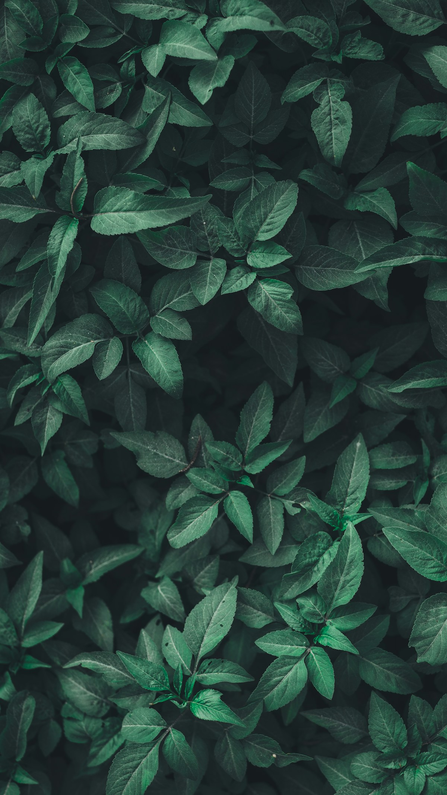

EDUCACIÓN AMBIENTAL · UN FUTURO COMPARTIDO
Comprender la Tierra.
Cuidar la vida.
El conocimiento nos conecta con la naturaleza. Descubre cómo funcionan los ecosistemas y cómo construir una relación más responsable con nuestro planeta.
Comienza a explorar ↗Un espacio para aprender y transformar.CINCO MIRADAS, UN MISMO PLANETA
El futuro se cuida.
El conocimiento lo inicia.
Un recorrido académico que une conceptos, ejemplos y propuestas. Cada tema tiene su propio espacio para profundizar.
Sistemas conectados
Comprende las relaciones entre naturaleza y sociedad.
Explorar tema ↗02La riqueza de la vida
Explora genes, especies y ecosistemas.
Explorar tema ↗03Un clima que cambia
Distingue causas, impactos y respuestas.
Explorar tema ↗04Recursos con futuro
Aprende sobre el uso responsable del agua y la energía.
Explorar tema ↗05Del saber a la acción
Diseña un proyecto para tu comunidad.
Explorar tema ↗TODO ESTÁ RELACIONADO
La naturaleza funciona
en conjunto.
Un ecosistema combina seres vivos y elementos físicos que interactúan como una unidad. Estudiar esas relaciones ayuda a comprender por qué una alteración puede repercutir en todo el sistema. (CDB, 1992, art. 2).
OBSERVA TU ENTORNO
Un planeta.
Muchas formas de vida.

APRENDER PARA TRANSFORMAR
Pequeñas preguntas.
Decisiones conscientes.
Diseña tu plan ↗Observar
Identifica un problema ambiental cercano.
Investigar
Consulta fuentes y registra evidencias.
Actuar
Propón una medida viable y compartida.
Evaluar
Compara resultados y ajusta tu propuesta.